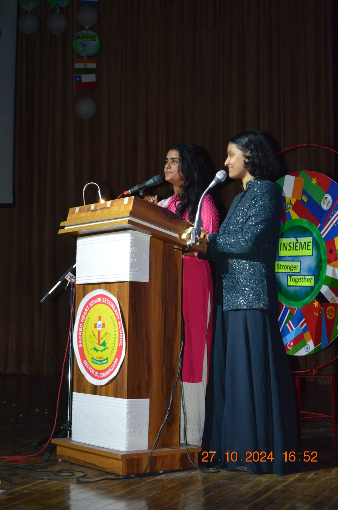
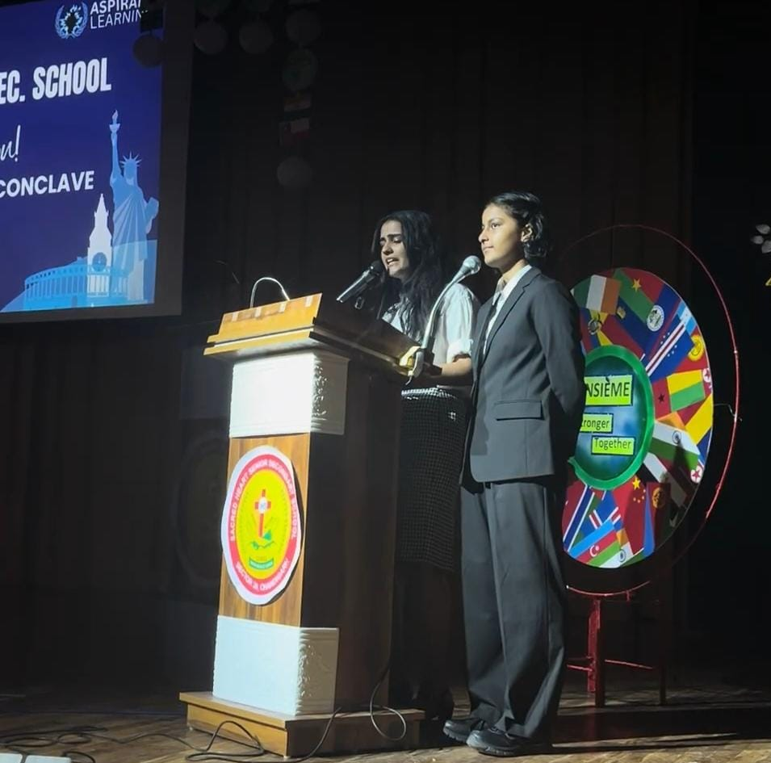
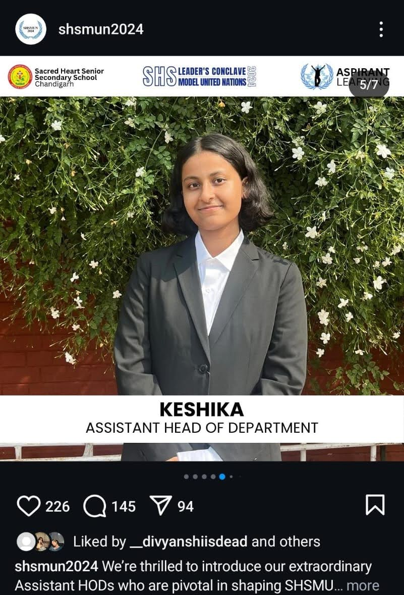
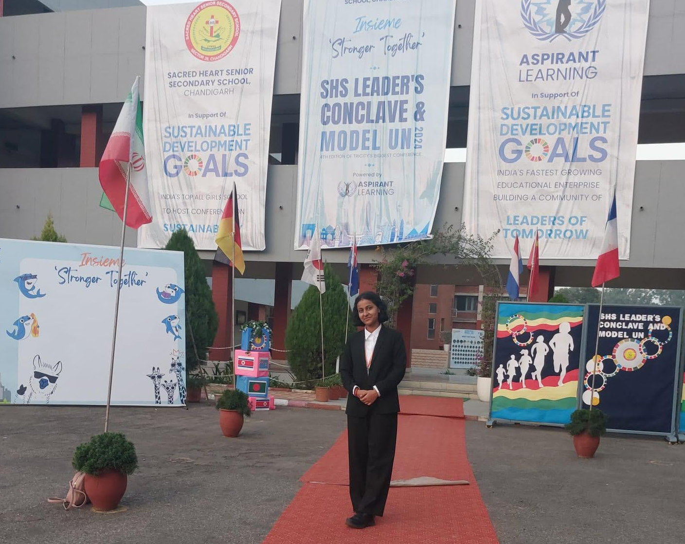
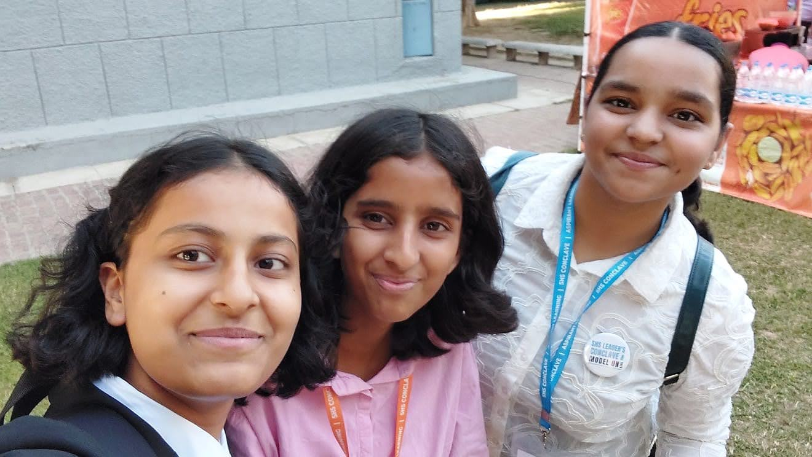
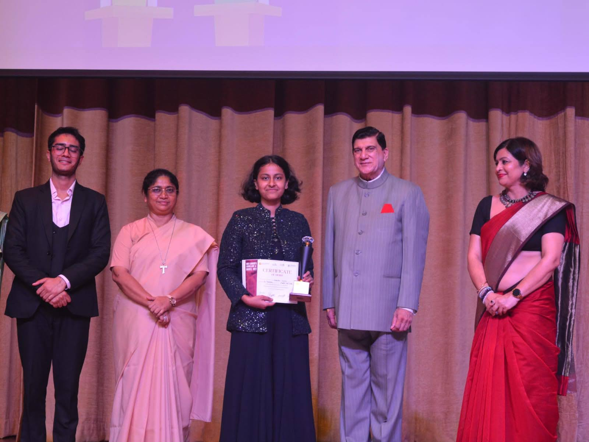
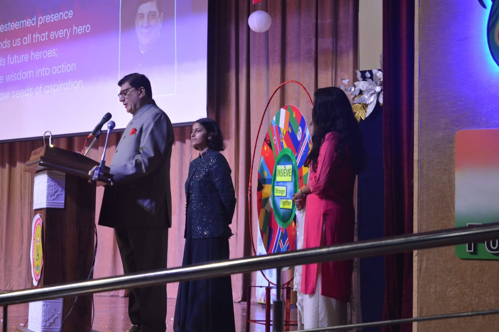

Large delegate base
More than a thousand MUN delegates created a serious, competitive and high-energy environment.
LEADERSHIP • HOSTING • EVENT OPERATIONS
A large-scale event experience where leadership, public speaking, hosting, coordination and execution all came together in one place.

delegates in the MUN
participants in the Leader’s Conclave
cities represented across the conference
Compère (Host) and Assistant Head of Department
Overview
SHSMUN and the SHS Leader’s Conclave were large, high-energy student conferences that brought together delegates, speakers, organisers and participants from multiple cities for serious discussion, exchange of ideas and large-scale student engagement.
I was part of this experience not just as a participant, but as someone helping make the event happen on the ground. I served as a compère (host) and Assistant Head of Department, which meant being closely involved in both presentation and execution.
What made this initiative especially meaningful was its scale. Managing and supporting a conference environment with this many people required confidence, coordination, timing, communication and constant presence.
My Role
As compère, I had to help carry the energy of the event and create a sense of structure and engagement for the audience. Hosting on a big stage requires clarity, presence and the ability to keep things moving smoothly.
At the same time, being an Assistant Head of Department meant supporting the operational side of the event as well. It was not just about speaking well. It was also about helping coordinate, contribute and ensure that a large student-led platform functioned successfully.
That combination of stage presence and behind-the-scenes responsibility is what made this experience so formative.
Leadership, confidence under pressure, audience handling, communication, and the ability to contribute meaningfully in a fast-moving event environment.
Scale of the Event
More than a thousand MUN delegates created a serious, competitive and high-energy environment.
The Leader’s Conclave brought together 300+ participants in a parallel leadership-focused experience.
Representation across 10+ cities gave the event a broader footprint and a stronger sense of scale.
This was not a symbolic role. It was an actual large-event environment that required presence and responsibility.
Moments








A few snapshots from an experience that was intense, fast-paced, memorable and full of learning.
Reflection
This initiative stayed with me because it brought together several things I care about: communication, public speaking, leadership, responsibility and large-scale teamwork.
Experiences like this taught me that leadership is not only about titles. It is also about how you show up, how you contribute under pressure, and how you help create something larger than yourself.
This was one part of a broader journey through leadership, hosting, education and building meaningful things.
View More Initiatives →